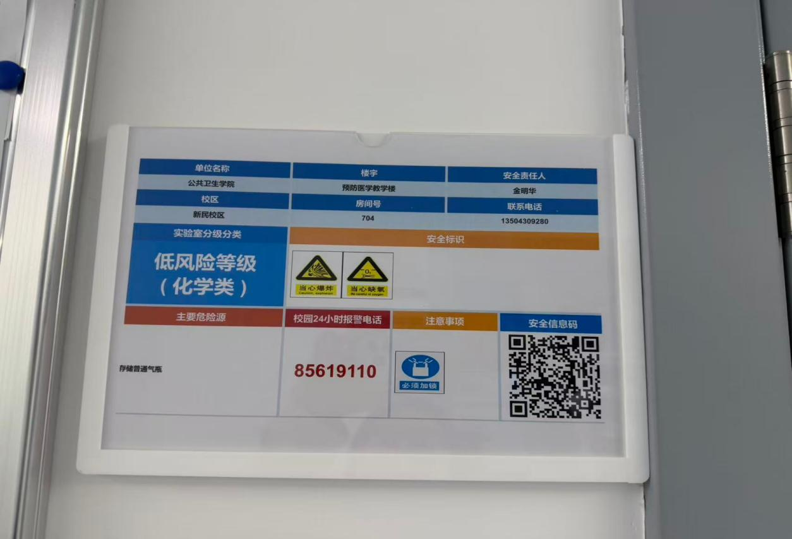
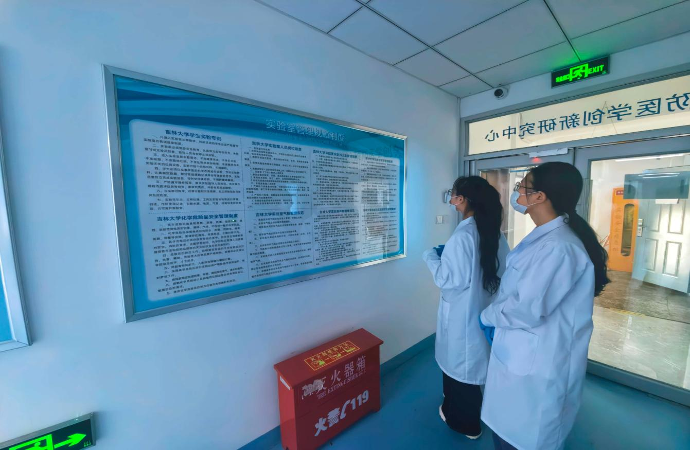
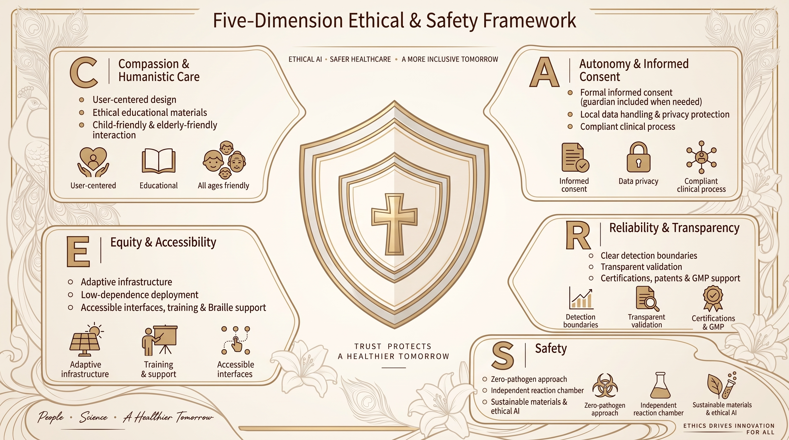

1. Overview
Safety has been a fundamental consideration throughout our project, beginning with the careful selection of experimental materials. To minimize biological risks at the source, we did NOT work with intact respiratory pathogens; instead, we used synthetic recombinant plasmids carrying conserved gene sequences from five respiratory pathogens as surrogate templates for assay design, optimization, and performance evaluation. The recombinant Cas12a protein used in our detection system was produced in collaboration with the School of Life Sciences at Jilin University, with Escherichia coli used only as an expression host during protein production. Our subsequent detection experiments used only the prepared Cas12a protein and did not involve bacterial cells. For final clinical validation, we used extracted clinical nucleic acid material provided by CDC only after it had been preprocessed and confirmed to be noninfectious and suitable for laboratory testing.
Although our detection experiments did not involve intact respiratory pathogens, we recognized that nucleic acid amplification and laboratory operations still present potential risks, including aerosol-mediated cross-contamination, accidental plasmid release, and chemical exposure. To address these concerns, we integrated safety considerations into both system design and experimental procedures. Our closed, one-tube RPA–CRISPR detection system reduces the need to open reaction tubes after amplification, while standardized laboratory procedures, personnel training, risk assessments, sample tracking, and regulated waste disposal provide additional layers of protection.
Our commitment to safety also extends beyond the wet lab. We carefully consider the reliability and limitations of computational models, the security of software and experimental data, and the thermal, electrical, optical, and mechanical risks associated with our portable detection device. Through our C.A.R.E.S. framework, we further incorporate ethical considerations, accessibility, privacy, and the needs of vulnerable populations into the responsible development of our technology. Recognizing that our device remains at the research and prototype stage, we also acknowledge the need for further validation and safety testing before broader deployment.
Throughout the project, we follow applicable Chinese biosafety regulations and iGEM safety guidelines, continuously identifying potential risks and implementing appropriate preventive measures. By integrating safety into experimental design, laboratory management, technological development, and future applications, we aim to protect researchers, users, and the environment while advancing accessible and responsible molecular diagnostics.
2. Self Check List
View table
| Question | Answer |
|---|---|
| Did our team develop the full experimental plan based on existing studies and experience from earlier iGEM teams? | Yes. We reviewed many studies on in vitro RPA CRISPR nucleic acid detection, cases of aerosol contamination control, and safety practices from earlier iGEM teams. We used this information as the basis for system design and the safety plan. |
| Did the project identify and control the safety risks that are specific to this project? | Yes. The main risks include nucleic acid aerosols from RPA amplification, accidental plasmid release, and injuries caused by chemical reagents. We used an integrated closed one tube reaction system to reduce aerosol spread at the source. We also use complete operating procedures, material storage rules, and waste disposal processes to keep these risks under control. |
| Did our team consider biosafety during project design? | Yes. For assay design and validation, we use synthetic recombinant plasmids that carry conserved pathogen sequences instead of intact pathogens. No live pathogenic bacteria or viruses are added to the detection process. The only living host used in the project is Escherichia coli, which is used to express recombinant Cas12a protein during reagent preparation. This protein expression work was carried out with the School of Life Sciences, Jilin University. The diagnostic assay itself uses the prepared Cas12a protein, not bacterial cells. In the final clinical validation, the material from the CDC was an extracted nucleic acid sample. It had already been preprocessed and released as noninfectious material for laboratory testing. |
| Did our team study possible real world risks from future use of the technology? | Yes. We studied the limits of future use of this in vitro nucleic acid detection technology in primary level settings. We discussed possible problems such as reagent disposal and incorrect amplification. We made clear that the technology is currently used in laboratory settings. When it is combined with our own portable detection device, it may be used for early deployment after several rounds of standard testing. We also developed a method to help prevent misuse of the technology. |
| Does each possible risk have a practical response and emergency plan? | Yes. We carry out regular laboratory risk assessments and have standard emergency plans for situations such as plasmid spills, reagents touching the skin, broken centrifuge tubes, and aerosol contamination. We also provide safety training for all team members. |
| Are all project safety measures fully recorded and traceable? | Yes. We record all experimental work, reagent use, plasmid use, use of Escherichia coli as an expression host, receipt and handling of clinical nucleic acid samples, risk checks, and waste transfer in laboratory notebooks. Laboratory SOPs, safety training materials, and iGEM Safety Form materials are also stored for future use. |
| Did the project use any living biological host? | Yes, but only for reagent production. Escherichia coli was used as an expression host to produce recombinant Cas12a protein with the School of Life Sciences, Jilin University. It was not used as a pathogen model, test sample, or part of the final RPA CRISPR detection reaction. Later assay work used the prepared Cas12a protein. |
| Did the project use any real clinical material? | Yes. The final validation used a clinical nucleic acid sample provided by a Center for Disease Control and Prevention, or CDC. Our team received nucleic acid, not an untreated clinical sample. Before transfer, the material had already been preprocessed and released after a biosafety assessment confirmed that it was noninfectious and suitable for laboratory nucleic acid testing. |
3. Lab Safety
3.1 Laboratory Information
The experiments were carried out in a Biosafety Level 2, or BSL 2, laboratory at the School of Public Health, Jilin University. The laboratory follows the General Guidelines for Biosafety in Pathogenic Microorganism Laboratories of the People's Republic of China and the related laboratory safety rules for higher education institutions. The diagnostic assay work uses in vitro nucleic acid experiments and does not culture live pathogens. Escherichia coli is used only as an expression host to produce recombinant Cas12a protein during reagent production. The final clinical validation uses only extracted nucleic acid material provided by the CDC after earlier processing and biosafety release. Our team does not handle untreated clinical samples or intact pathogens.

3.2 Safe and Proper Use of Equipment
Clean bench, used for dividing reagents, preparing the reaction system, and loading templates in a controlled clean area to reduce contamination during nucleic acid detection experiments;
Centrifuge, vortex mixer, and PCR instrument, used for RPA and CRISPR fluorescence detection;
Personal protective equipment such as safety goggles, nitrile gloves, and laboratory protective clothing, worn correctly during all experiments;
Emergency facilities such as emergency showers and eyewash stations, fire fighting equipment, first aid kits, and emergency lighting;
Entry and exit registration.
3.3 Personal Operational Safety
3.3.1 Safety Training
Before doing experiments, all wet lab team members must complete safety training. The training covers basic biosafety knowledge, BSL 2 laboratory rules, personal protection, work area management, instrument use, and emergency procedures for spills and other laboratory accidents. Our team also receives special training on RPA CRISPR procedures, prevention and control of nucleic acid aerosols, plasmid management, and disposal of laboratory waste that contains nucleic acids.

3.3.2 Safety Requirements
Before entering the laboratory, staff must correctly wear a lab coat, mask, double layer nitrile gloves, and safety goggles. Eating and drinking are not allowed in the experimental area, and reagents must not touch the face. All experimental work is fully recorded in the laboratory notebook.
3.4 Waste Disposal
Laboratory waste is strictly sorted, collected, and disposed of by type.
Laboratory solid waste: Consumable items that touch plasmids, nucleic acids, or reaction mixtures, including pipette tips, eight tube strips, and centrifuge tubes, are collected in assigned laboratory waste bags or containers. They are then transferred through the institution's approved waste management system. Sharp items are placed directly into puncture resistant sharps containers.
Liquid waste: Waste that contains nucleic acids and remaining reaction mixtures are collected separately in assigned containers and transferred through the institution's approved waste management process. Chemical waste without biological materials is placed in separate chemical waste containers for central collection and disposal.
General household waste is packed separately and must never be mixed with experimental laboratory waste.
3.5 Laboratory Risk Assessment
View table
| Risk | Emergency Response |
|---|---|
| Spill of plasmids or nucleic acid reaction mixtures that may produce nucleic acid aerosols | Immediately keep people away from the affected area and wear suitable protective equipment. Absorb the spill with disposable material, collect all remaining material as laboratory waste that contains nucleic acid, and clean the surface according to the laboratory SOP for nucleic acid spills. |
| Irritating reagents such as fluorescent dyes and buffers touch the skin or splash into the eyes | Skin contact: Rinse with plenty of running water for 15 minutes. Eye exposure: Use the eyewash station immediately and flush the eyes for a long enough time. Get medical help quickly if discomfort continues. |
| Electric shock caused by old circuits or instrument problems | Check laboratory electrical equipment regularly. If electric shock happens, immediately turn off the main power supply and use insulated tools for rescue. |
| Fire caused by organic solvents or electrical problems | For a small fire, turn off the power supply and use a dry powder fire extinguisher. If the fire spreads, leave the area quickly and call the fire department. |
4. Design Safety
Traditional step by step RPA CRISPR detection requires the tube to be opened after amplification so that later reaction components can be added. This can easily release nucleic acid aerosols and cause cross contamination in the laboratory.
After several rounds of gradient optimization, we built a layered, sealed, one tube reaction system. RPA premix, the plasmid template, MgSO4 solution, and the CRISPR RNP complex are mixed at the bottom of the tube. All components are sealed in the same centrifuge tube from the start. The reaction stays sealed during the whole process, so there is no need to open the lid again or do another pipetting step.
This molecular design removes the need to open tubes after amplification. It greatly reduces the risk of making nucleic acid aerosols. Together with biosafety cabinet procedures, it forms two levels of safety protection.
5. Biosafety
5.1 Plasmid Application Safety
5.1.1 Purpose
Traditional respiratory pathogen experiments may require work with intact pathogenic material. To avoid these risks during assay development and validation, we use synthetic recombinant plasmids as simulated pathogen templates. This creates a pathogen free assay process in which no live pathogenic bacteria or viruses are added to the detection reaction.
5.1.2 Design
We made synthetic recombinant plasmids that contain specific conserved sequences from five respiratory pathogens. These plasmids replace intact pathogens when we test the performance of the RPA CRISPR system. The plasmids are used only as defined nucleic acid templates for amplification and detection experiments. Every use and transfer in the laboratory is fully recorded to control the risk of accidental plasmid release.
5.1.3 Conclusion
By using plasmids to represent pathogen targets, this project removes the need to handle live respiratory pathogens during assay design, optimization, and performance testing. This creates an assay validation process without live pathogens. Standard rules for storage, access, and tracking also help keep plasmid materials under control.
5.2 Genetic Element Safety
5.2.1 Purpose
The CRISPR Cas12a system can cut nucleic acids. Therefore, all genetic elements must be checked for off target effects and possible biological toxicity so that these molecular parts can be used safely.
5.2.2 Design
The primers and crRNAs used in this project were screened by machine learning and are designed to recognize only the target sequences of five respiratory pathogens. Sequence alignment showed that the target areas do not have important similarity with the human genome. This indicates no risk of off target cutting of the human genome. The full set of detection elements only recognizes targets and produces fluorescent signals. It does not produce pathogenic factors or toxin proteins. All nucleic acid work is done on a clean bench, and the closed one tube system further reduces the spread of amplified products.
5.2.3 Conclusion
After sequence design and safety checks, the genetic elements used in this project show high specificity, no clear off target risk, and no natural biological toxicity. Safety measures at both the molecular and operating levels effectively control the risks related to these genetic elements.
5.3 Cas12a Protein Expression Host Safety
5.3.1 Purpose
Although bacteria are not used in the diagnostic reaction itself, Escherichia coli was used during reagent production as the expression host for recombinant Cas12a protein. This protein expression work was completed with the School of Life Sciences, Jilin University. This use is separate from the RPA CRISPR detection process and is therefore documented separately.
5.3.2 Design
Escherichia coli was used only to express recombinant Cas12a protein. The bacterial culture was not used as a pathogen model, simulated sample, assay target, or part of the detection reaction. After protein production, later RPA CRISPR experiments used the prepared Cas12a protein as a molecular reagent. All work related to Escherichia coli and all waste transfer followed the laboratory's approved rules for microbial expression work.
5.3.3 Conclusion
Escherichia coli was used only as a host to produce Cas12a protein. It was not part of the diagnostic assay or pathogen detection process. This protein preparation was carried out with the School of Life Sciences, Jilin University. Therefore, the use of Escherichia coli for reagent preparation is clearly separate from the design of the RPA CRISPR assay, which does not use live pathogens.
5.4 Clinical Nucleic Acid Sample Safety
5.4.1 Purpose
At the final validation stage, a real clinical nucleic acid sample was used to test assay performance with target material from clinical testing instead of a simulated plasmid template.
5.4.2 Source and Safety Status
The nucleic acid sample was provided by a Center for Disease Control and Prevention, or CDC. Our team received an extracted nucleic acid preparation, not an untreated clinical sample. Before it was transferred to our team, the material had already been preprocessed by the CDC. It was released only after a biosafety assessment confirmed that it was noninfectious and suitable for laboratory nucleic acid testing. Our team did not handle any intact pathogen or untreated patient sample.
5.4.3 Conclusion
The clinical validation used real clinical nucleic acid material for testing, but our team did not handle live pathogens during the experimental process. Sample receipt, use, and data tracking were fully recorded in our laboratory notebook system.
6. HP Safety
C.A.R.E.S. Shield: Safety Design for Vulnerable Groups

Our safety strategy covers not only biosafety and physical safety, but also data security, psychological safety, and safe use. To include safety in all HP activities, we consulted Professor Li Hui, an ethics expert from the School of Public Health, and developed the C.A.R.E.S. framework. It brings safety into the real use of the product by vulnerable groups, including older adults and children, and helps keep each step of innovation responsible.

C: Compassion and Human Care
Psychological Safety: Illustrated guides, large text interfaces for older adults, and warm voice prompts help reduce test anxiety in children and older adults and reduce psychological pressure.
Health Education Safety: Focus on daily respiratory health instead of complex scientific principles to avoid giving people too much information and causing public anxiety.
A: Autonomy and Informed Consent
Ethical Safety: Follow informed consent procedures. Participants or guardians receive full information and sign by choice, which protects the right of vulnerable groups to make their own decisions.
Data Security: Store test data locally after removing identifying information and encrypting it. This reduces risks from data transfer across borders and protects privacy.
R: Reliability and Transparency
Technical Safety: The device has patents and medical device approvals. Planned GMP blind tests, with an expected CV below 5%, will check accuracy and reduce wrong classification.
Transparency Safety: Present the device as a support tool for community monitoring and early screening. Clearly explain its limits of use to avoid giving users false confidence.
E: Equity and Accessibility
Safe Use: Low power hardware supports solar charging and uses a simple LED display. Training in different regions reduces user mistakes and helps ensure correct operation.
Physical Safety: Braille prompts and button design support users with visual impairments and reduce extra risks caused by difficult operation.
S: Safety
Biosafety: No live organisms are used. Plasmids and synthetic gene sequences are used to represent pathogen features, removing leakage risks from highly pathogenic organisms.
Material Safety: A 3D printed case and environmentally friendly, non toxic coatings protect users and the environment.
Algorithm Safety: AI is used only for fluorescence signal analysis to improve accuracy and specificity, reduce manual reading errors, and help produce scientifically reliable and safe results.
7. Data Use and Model Safety in Dry Lab Work
Our dry lab work ranks primer and crRNA combinations and predicts reaction conditions for RPA CRISPR/Cas12a nucleic acid detection. Data errors, overrating model performance, and wrong use of simulation results may affect later experimental decisions. We manage these risks through data checking, model evaluation, and responsible use of results.
7.1 Public Data Sources and Scope of Use
Our training data come from published studies, and target gene sequences come from the public NCBI GenBank database. To obtain assay designs and their related sequences, we searched PubMed and Google Scholar for relevant papers. We then obtained target gene sequences by using the accession numbers reported in those papers. The data include nucleic acid assay design records and public sequences. Our team did not collect patient identifiers or clinical records.
To check that design records matched the target genes, we checked sequence matches for the published primers and crRNAs, primer direction, amplicon areas, crRNA positions, and protospacer adjacent motifs, or PAMs. Of the 200 design records first collected, 142 passed the matching checks, and candidate generation was completed for 112.
7.2 Training Labels and Interpretation of Predictions
Published studies rarely report combinations that do not work or have low efficiency. Our data include combinations used in published studies and candidate combinations made from the related target genes when experimental results are not yet available. The model learns the relative ranking inside each candidate group. Its scores show which combinations should be tested first in experiments.
7.3 Data Splitting and Model Evaluation
To split the data by homology, we grouped target genes into homology clusters based on sequence similarity. We then placed each complete cluster in the training, validation, or test set. Numerical features were scaled by using statistics from the training set. The number of training epochs was chosen by using the validation set. The test set was not used to update parameters or choose the number of epochs.
Among the 26 test candidate groups, the combination reported in published studies ranked first in 24 groups. Hits@1 was 0.9231. This is the share of candidate groups in which the published combination ranked first. Ablation tests did not show that pretrained weights improved the ranking results.
7.4 Scope and Limits of Reaction Kinetics Simulations
To predict how reaction conditions affect the detection signal, we developed a reaction kinetics model that includes reverse transcription, RPA amplification, Cas12a activation, and reporter cleavage. We searched for reaction conditions within set ranges. The model simplifies reaction pathways, enzyme activity, and mass transfer. It shows the detection signal as the concentration of cleaved reporter molecules. Predictions depend on the sources of the parameters, starting conditions, the spatial model, and numerical settings.
We carried out local sensitivity analysis to study how changes in the concentrations of key components around their set values affect the predictions. The concentration combinations suggested by the algorithm are candidate conditions within the current model and search ranges. Their real limits of detection and specificity still need experimental validation. Before experimental use, the units of the parameters, the usable ranges of reagents, and whether the model assumptions match the experimental system must be checked.
7.5 Linking Computational Results to Experimental Validation
During candidate screening for respiratory syncytial virus, the top 10 combinations ranked by the model were tested in wet lab experiments. The combination ranked second showed the highest detection efficiency in this comparison. Performance with other targets, sample backgrounds, and reaction conditions still needs to be tested.
To study false positive and false negative risks, future work should compare non target sequences, include negative and non target controls, and check how well target sequence variants are covered and how repeatable the assay is. Validation with biological materials needs a risk assessment based on the actual samples, material sources, and experimental activities so that the needed level of protection can be decided.
7.6 Responsible Use of Results
Our computational process supports candidate screening and comparison of reaction conditions in nucleic acid detection research. Its results are not a basis for clinical diagnosis. Using the method for other targets or purposes requires a new check of whether the data are suitable, whether the assay is specific enough, and what experimental risks are present. Uses outside the current research scope also require checks for possible misuse and the conditions needed for use.
When reporting results, the sources of papers and sequences should be kept. The candidate screening rules, data splits, model assumptions, and validation scope should be explained. Published evidence, computational predictions, and experimental results should be clearly separated.
8. Software and Data Safety
ByeGerm's mobile application connects to the instrument through WiFi to set up runs and show temperature, fluorescence images, analysis results, and saved records. The second generation device takes images from different sides of a rotating chamber. Therefore, each signal must be correctly linked to its observation side and tube position so that records are accurate and results can be read correctly.
Data collection, analysis, and display have been shown on the tested mobile devices. The platform does not currently provide cloud services. Before handling health data that can identify a person, the platform needs clear rules for data collection, access and export permissions, connections between the device and mobile phone, and protection of records during storage and transfer. Repeated run tests should check that the observation side, tube position, image, temperature, and time stay correctly linked after connection problems or unfinished runs.
Internet based record synchronization is a future development direction and is not a function shown in the current hardware records. Any future version will need separate checks for user permission, protection of stored and transferred records, and recovery after offline use. Image classification by the platform must also stay separate from a pathogen specific diagnostic conclusion, which depends on validated assay rules and controls.
For the current research stage system, demonstration records should avoid unnecessary personal identifiers. Any future work that uses test results linked to a person must meet the related requirements for consent, privacy, and institutional review before the data are collected or shared.
9. Hardware Safety
9.1 Scope of the Assessment
ByeGerm uses heating, fluorescence imaging, electronic control, and battery power. The second generation prototype also has a rotating reaction chamber and a separate lysis area. These features bring thermal, electrical, optical, and mechanical risks that must be considered together with the biological risks of the detection assay.
Our current hardware records show the instrument structure and early function tests. They do not prove that the device has completed all safety tests needed for use without supervision in homes, kindergartens, or elder care facilities. The points below therefore separate the design features that already exist from the checks that are still needed before wider use.
9.2 Thermal Safety
The first generation device uses temperature sensing and feedback control to control its heating parts. The recorded control range is 25 to 95 °C, with temperature changes of about ±0.7 °C under the reported test conditions. These numbers show temperature control performance. They do not measure the surface temperature of the case, and they do not prove that the second generation device is safe to touch during operation.
The second generation device has a heated lysis area with two positions, separate from the main reaction chamber. It also uses support and insulation around the heating areas. Separate front and upper lids make the two loading positions easy to identify. However, heating surfaces may stay hot during and after a run. Heat transfer between the two areas has not yet been measured when both are running at the same time. Before normal use, we need to check surface temperatures that users can touch, temperature sensor or control faults, cooling time, and the effect of running both areas together. Users should let heated parts cool before handling reaction tubes or working on the chamber.
9.3 Electrical and Power Safety
The first generation platform uses a lithium battery pack with circuits for charging, discharging, protection, and charge display. In the second generation, the power board manages a 12 V input and 5 V and 3.3 V outputs. The device also has external connectors, a power switch, and a removable battery compartment. The hardware documents include connections for power distribution and fuses.
These design records should not be treated as proof that electrical safety certification is complete. Before long periods of operation or use outside supervised settings, the condition of wires and connectors, heating and motor loads, battery behavior, abnormal power conditions, and case temperatures need to be checked. If a cable, connector, battery, or board is damaged or becomes unusually hot, the device should be turned off and checked before it is used again.
9.4 Optical and Mechanical Safety
Fluorescence imaging takes place inside a closed observation area. The housing blocks outside light from the camera and limits direct access to optical parts during normal operation with the chamber closed. This optical design was made for stable image collection. Its light blocking function alone does not prove a tested eye safety level. During inspection or maintenance, users should avoid looking directly at an exposed excitation LED for a long time.
In the second generation design, a drive system rotates the three sided reaction chamber, and position feedback is used to find the observation position. The upper lid gives access to the chamber for loading and inspection. Before the system is operated, reaction tubes and internal wires should be checked to make sure they are fixed in place and have enough space for movement. Movement should be stopped before anyone touches or works on rotating parts. The available documents do not show a lid interlock or a tested automatic stop function. Therefore, these should not be described as existing safety features.
9.5 Reaction Containment and Current Limitations
The assay documents describe a sealed, one tube reaction method that is designed to reduce opening after amplification. Safe use of the instrument also depends on the tubes being in good condition, correct loading, and correct disposal of used reaction tubes. The current hardware records describe a tube based device. They do not show an integrated microfluidic chip, disinfection inside the device, or automatic inactivation of used reactions.
Future safety tests for the whole device will include running both heating areas, repeated chamber movement, long periods of powered operation, checks after interruptions or faults, and procedures for handling a damaged or leaking tube. Until these checks and the related assay validation are finished, the prototype should be described as a research stage instrument tested under supervision. It should not be described as a safety tested device for independent use by children or other untrained users.